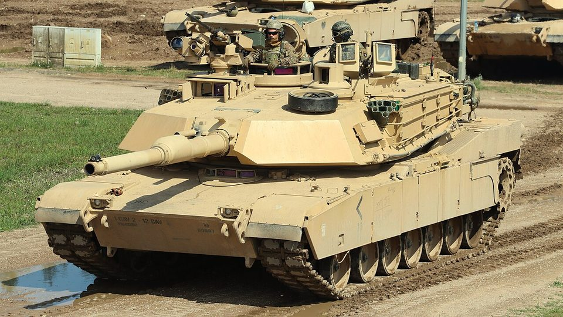

La guerra del Golfo, 1991: carros occidentales frente a carros iraquíes
Los carros de la guerra del Golfo de 1991: el M1 Abrams y el Challenger frente a los T-72 y Tipo 69 iraquíes, y el resto de blindados de la coalición.

Dos ejércitos muy desiguales
En 1990 Irak invadió Kuwait, cuyo ejército empleó carros como el Chieftain. En 1991 una coalición internacional liberó el país. El ejército iraquí tenía, entre otros, carros T-72 de exportación y Tipo 69 chinos.
Los carros de la coalición
El M1 Abrams estadounidense destruyó cientos de carros iraquíes, muchas veces de noche o a distancias desde las que el adversario no podía verlo, gracias a sus visores térmicos. El Reino Unido desplegó unos 200 Challenger 1, que destruyeron alrededor de 300 carros iraquíes sin perder ninguno por fuego enemigo.
Participaron también los M60 del Cuerpo de Marines, los AMX-30 de la división francesa Daguet y del ejército de Catar, los M551 Sheridan de la 82.ª División Aerotransportada, los FV101 Scorpion británicos y una brigada kuwaití con carros M-84.
Por qué fue tan desigual
Los T-72 iraquíes eran versiones de exportación, con munición y sistemas de tiro inferiores, y los Tipo 69 eran carros de diseño mucho más antiguo. Frente a los visores térmicos y los sistemas de tiro de los carros occidentales, apenas pudieron responder.
Artículo elaborado a partir de las fichas de esta enciclopedia, donde se citan las fuentes de cada dato.